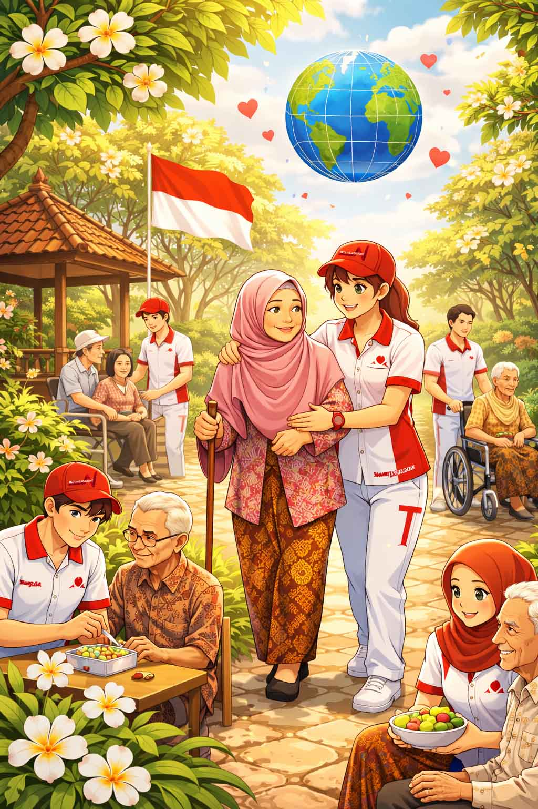
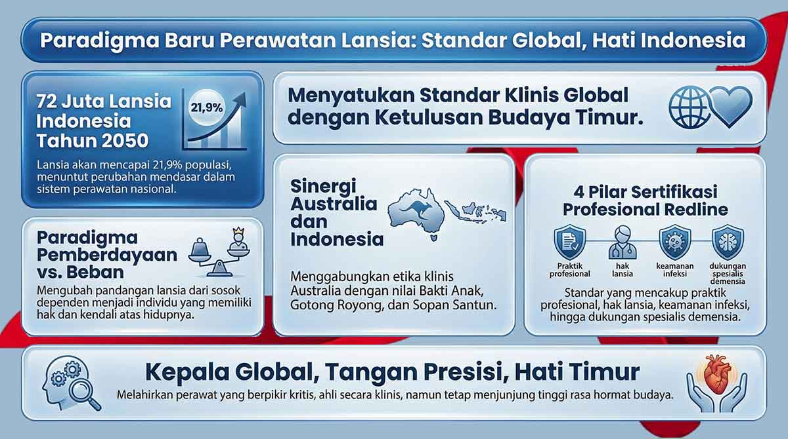

Paradigma Redline: Standar Global, Hati Indonesia Caregiver
Redline Academy membangun caregiver yang berpikir dengan standar global, bekerja dengan presisi, dan tetap berakar pada nilai care Indonesia.


Dua dunia, satu standar keunggulan
Redline tidak sekadar menyalin kurikulum asing. Kami menyatukan ketelitian klinis Australia dengan nilai Indonesia seperti bakti anak, gotong royong, dan sopan santun agar caregiver siap secara profesional tanpa kehilangan akar budaya.
Dari old paradigm ke empowered paradigm
Paradigma lama melihat lansia sebagai beban dan fokus care hanya pada bertahan hidup. Paradigma yang kami bangun berbeda: dukungan harus menjaga hak, otonomi, dan rasa kendali seseorang atas hidupnya sendiri.
Caregiver masa depan bukan hanya eksekutor tugas, tetapi fasilitator yang membantu individu tetap berdaya dalam batas kemampuannya.
Empat pilar sertifikasi profesional Redline
- Professional Practice & Care Foundations untuk etika, batas profesional, dan kerja kolaboratif yang rapi.
- Empowering & Rights-Based Support untuk menggeser peran caregiver dari pelaksana menjadi fasilitator pemberdayaan.
- Infection Prevention & Safety Management untuk menjaga keselamatan dengan standar yang bisa diterapkan di konteks lokal.
- Specialist Support for Dementia & Disability untuk meningkatkan kualitas hidup dan mencegah isolasi sosial.
Redline membangun caregiver dengan kepala global, tangan presisi, dan hati yang tetap timur.
Inilah jembatan antara kualitas profesional dan kedekatan budaya yang selama ini sering dipisahkan secara keliru.
Mengapa sintesis ini penting?
Care yang sangat teknis tetapi dingin akan terasa mekanis, sementara care yang hangat tetapi tanpa standar akan sulit dipercaya lintas institusi dan negara. Redline memilih keduanya: rigor dan kehangatan.
Itulah yang membuat lulusan Redline lebih siap bekerja di rumah, komunitas, maupun sistem perawatan yang menuntut dokumentasi dan akuntabilitas tinggi.
Keyword cluster dan internal linking
Halaman ini menjadi pusat editorial untuk cluster pelatihan caregiver standar global dan menghubungkan pembaca ke artikel yang menjelaskan credential, community care, serta jalur belajar di Redline.
Pertanyaan yang Sering Diajukan
Apakah sertifikat ini langsung bisa saya pakai di Indonesia?
Ya. Sertifikat ini bisa langsung dipakai untuk konteks lokal seperti perawatan keluarga, pendampingan lansia di rumah, dan membangun rekam jejak awal saat Anda mulai mengambil peran care di Indonesia.
Bisa merawat anggota keluarga sendiri dengan sertifikat ini?
Bisa. Ini justru tahap pertama yang paling nyata. Pembelajaran yang Anda dapatkan bisa langsung diterapkan untuk merawat orang tua, pasangan, atau anggota keluarga lain dengan cara yang lebih aman, terstruktur, dan bermartabat.
Rumah sakit atau panti jompo mana yang menerima sertifikat ini?
Penerimaan selalu bergantung pada kebutuhan dan kebijakan masing-masing pemberi kerja. Secara umum, sertifikat ini paling relevan untuk pemberi layanan home care, panti wreda, komunitas lansia, layanan pendampingan, dan organisasi care lokal yang menilai kesiapan praktik dan sikap profesional.
Berapa lama pengalaman lokal yang saya butuhkan sebelum melamar ke luar negeri?
Tidak ada satu angka yang berlaku untuk semua negara atau jalur. Namun, secara jujur, rekam jejak lokal yang konsisten biasanya membuat aplikasi jauh lebih kuat. Fokus utamanya adalah membangun pengalaman nyata, referensi kerja, dan bukti praktik yang rapi sebelum mengejar peluang global.
Apakah saya wajib ke luar negeri setelah lulus?
Tidak. Opsi global adalah pilihan, bukan kewajiban. Anda bisa memakai sertifikat ini untuk mulai dari rumah, tumbuh di pasar kerja lokal, lalu membuka peluang internasional ketika benar-benar siap.
Bagaimana jika saya perlu membatalkan pendaftaran?
Kebijakan pembatalan dan pengembalian dana mengikuti ketentuan pendaftaran yang berlaku pada saat Anda mendaftar. Jika ada perubahan rencana, sebaiknya hubungi tim Redline Academy secepat mungkin agar opsi yang tersedia bisa dijelaskan dengan jelas.
Two worlds, one standard of excellence
Redline does not simply import foreign curriculum. We combine Australia's clinical rigor with Indonesian values such as filial respect, mutual cooperation, and cultural courtesy so caregivers become professionally ready without losing their local roots.
From the old paradigm to the empowered paradigm
The old paradigm treats older adults as a burden and reduces care to physical survival. The paradigm we build is different: support must protect rights, autonomy, and a person's sense of control over their own life.
The future caregiver is not just a task executor, but a facilitator who helps people remain empowered within their real capabilities.
The four pillars of Redline professional certification
- Professional Practice & Care Foundations for ethics, boundaries, and clean collaboration.
- Empowering & Rights-Based Support to move caregivers from passive providers into empowerment facilitators.
- Infection Prevention & Safety Management to uphold safety through standards that still work in local contexts.
- Specialist Support for Dementia & Disability to strengthen quality of life and reduce social isolation.
Redline builds caregivers with a global head, precise hands, and an Eastern heart.
This is the bridge between professional quality and cultural warmth that is too often separated by mistake.
Why does this synthesis matter?
Care that is highly technical but emotionally cold becomes mechanical. Care that is warm but lacks standards becomes difficult to trust across institutions and borders. Redline chooses both: rigor and warmth.
That is what makes Redline graduates more prepared to work in homes, communities, and systems that require documentation, safety, and accountability.
Keyword cluster and internal linking
This page acts as the editorial center of the global standard caregiver training cluster, linking readers to articles on credentials, community care, and Redline's learning pathway.
Frequently Asked Questions
Can I use this certificate in Indonesia right away?
Yes. This certificate can be used immediately in local contexts such as family care, home-based elderly support, and building an early track record as you begin taking on care roles in Indonesia.
Can I use this certificate to care for my own family member?
Yes. This is often the most immediate first stage. What you learn can be applied directly to supporting parents, a spouse, or other family members in a safer, more structured, and more dignified way.
Which hospitals or elderly care homes accept this certificate?
Acceptance always depends on each employer's needs and policies. In general, this certificate is most relevant for home care providers, elderly care homes, senior community services, companion care services, and local care organisations that value practical readiness and professional attitude.
How much local experience do I usually need before applying overseas?
There is no single number that applies to every country or pathway. But honestly, a consistent local track record usually makes an overseas application much stronger. The main priority is building real experience, work references, and clear evidence of practice before pursuing global opportunities.
Am I required to go overseas after graduating?
No. The global option is a choice, not a requirement. You can use this certificate to start at home, grow in the local job market, and open international opportunities when you are truly ready.
What if I need to cancel my enrolment?
Cancellation and refund policy follow the enrolment terms that apply when you register. If your plans change, it is best to contact the Redline Academy team as early as possible so the available options can be explained clearly.
Siap memulai perjalananmu sebagai caregiver profesional?
Rawat keluarga hari ini. Bangun karir lokal dengan credential yang diakui. Buka pintu global ketika kamu siap - dengan sertifikat yang sama. Mulai dari Rp 500rb/bulan.